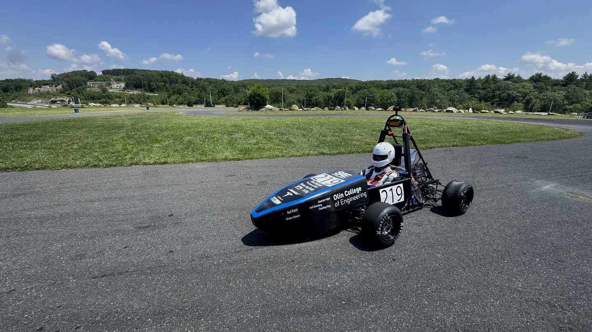
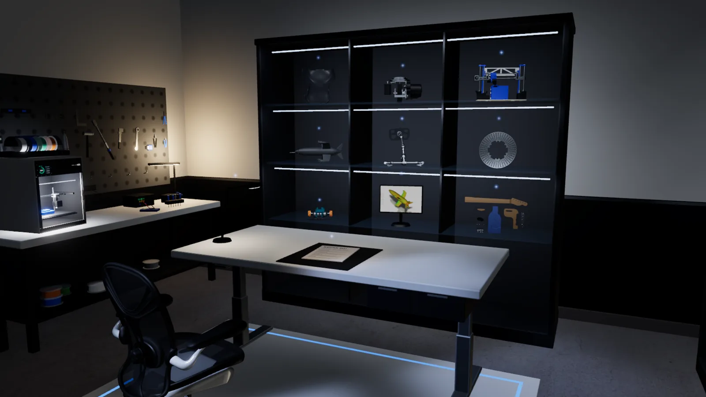
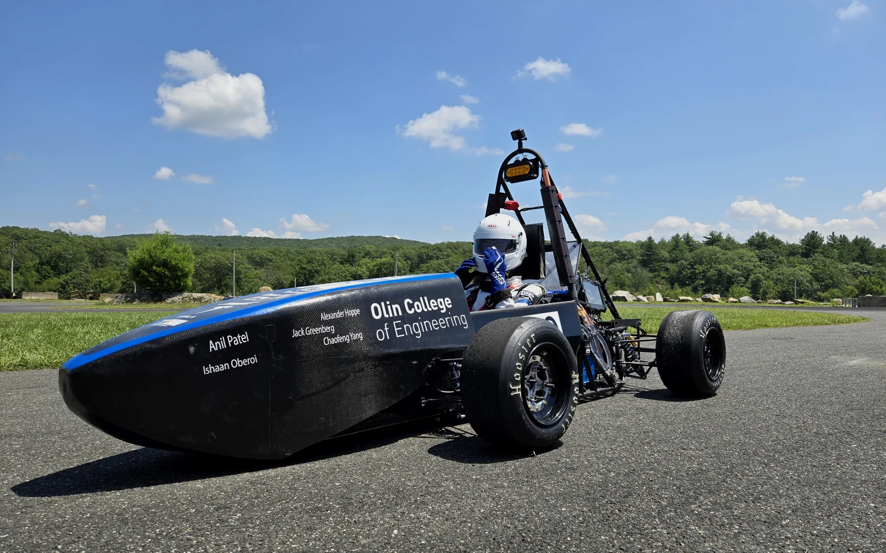

Mk.8 steering system
Closer driver reach; 0.9 kg removed from the bearing cages.

MECHANICAL ENGINEERING / OLIN ’28
Race-car systems. Robotics. Real hardware.
Designed, built, and tested.
01 / SELECTED WORK
Scroll a project to see it move.
Open it for the full engineering story.
Showing 16 of 16 projects
Closer driver reach; 0.9 kg removed from the bearing cages.

Pressure-test failures drove reinforcement and a 45-run study.

A built VTOL airframe working toward a 300 km/h target.

Gantry motion and calibration produced a 2,206-point scan.

Endurance thermal modeling tests a 25% mass-reduction target.

200 lb payload target; 300 lb carried in testing.

Composite support shaped by layup and service constraints.

Fabricated the aluminum driver seat for Mk.7.

30 tensile specimens and 11 rods supplied measured stiffness.

An auditable Fluent workflow built from 11 real failures.

Adjustable cue launch; fit problems drove a process change.

33.6% lighter; 18 s lap against an under-15 s target.

A 2.5-day gantry build exposed an actuator duty-cycle limit.

Raw walnut, CNC routing, and fixtures led to a playable guitar.

About $80 prototype cost; student trials shaped the kit.

Integrated cone-handling mechanisms for a winning alliance.
Every project has its own story: interactive motion, original build photos, and technical results.
No matching projects. Try another search or category.
THE INTERACTIVE PORTFOLIO
Explore the space. Pick up a project. Look at the engineering from every angle.
Enter the 3D Studio Move through the room · Rotate and inspect the models
EXPLORE IN 3D02 / HOW I WORK
Design decisions belong in the shop.
Test results belong in the next design.
Turn constraints into load cases, kinematics, and buildable assemblies.
SolidWorks · MATLAB · FEA · CFD
Thermal & structural modelingCarry tolerances, tooling, and assembly access from CAD to the finished part.
CNC · Lathe · TIG · Composites
From machined parts to steering systemUse calibrated sensors and physical tests to challenge the model.
Python · Arduino · Sensors · Testing
Calibration in practice
30 ENGINEERS. ONE RACE CAR.
I lead 30 mechanical engineers across four subteams, from design reviews and fabrication to vehicle integration. Previously, I led the cockpit: brakes, steering, and driver fit.
03 / LET’S BUILD SOMETHING
Seeking a Summer 2027 internship in
vehicle systems, robotics, or manufacturing.